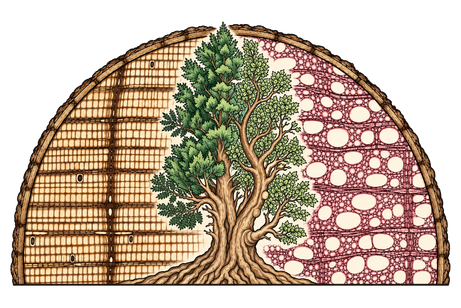
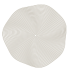
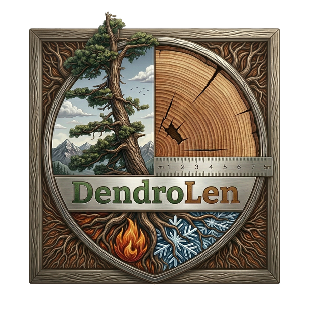
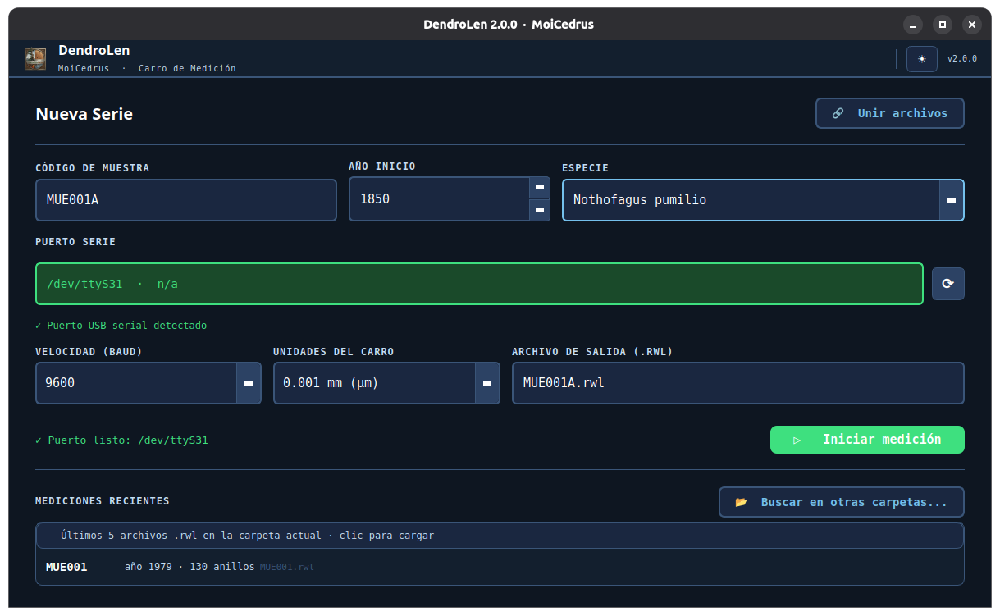
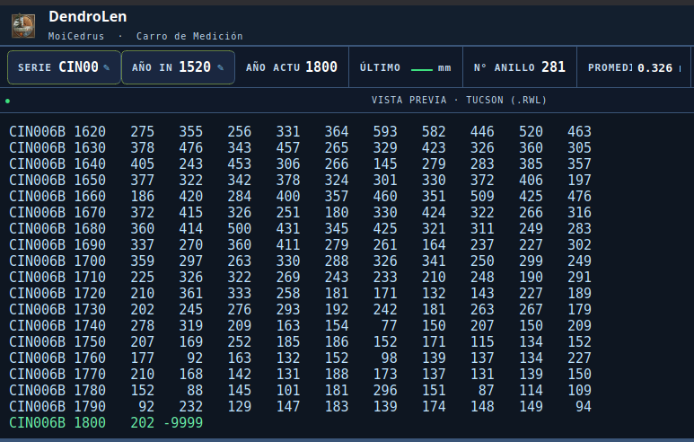

Captura en tiempo real
Recibe las lecturas del carro con codificador VRO mediante USB-serial y detecta adaptadores compatibles.
FTDI · CH340 · CP210x

MoiCedrusCIENCIA EN LOS ANILLOS
Los árboles
guardan tiempo.
Nosotros lo leemos.
DENDROLEN · SOFTWARE LIBRE
Mide anillos de árboles en tiempo real y lleva cada lectura al archivo de tu muestra.
DendroLen conecta el carro de medición con tus datos: captura por USB-serial, revisión de series y exportación en formato Tucson, con registro de anomalías.
Cada lectura conserva parte de una historia.

CONECTARMEDIRREGISTRAR
ConexiónVRO · USB-serial
Salida de datosTucson .rwl · eventos .json
LicenciaGNU GPLv3
Archivo científicoDisponible en Zenodo ↗CAPTURAS DEL PROGRAMA
Configura la muestra y el puerto, inicia la sesión y revisa los datos antes de continuar con tu colección.


Capturas compartidas en la presentación a la comunidad dendrocronológica de América Latina · septiembre de 2026.
EN LA MESA DE MEDICIÓN
Herramientas para acompañar la sesión, revisar lo medido y mantener los eventos asociados a cada anillo.
Recibe las lecturas del carro con codificador VRO mediante USB-serial y detecta adaptadores compatibles.
FTDI · CH340 · CP210x
Contrasta la serie en construcción con una referencia y explora la correlación global y en ventanas móviles.
Serie medida y cronología de referencia
Corrige el año de inicio o el código de muestra y deshaz la última medición cuando necesites repetirla.
Control sobre cada lectura
Marca anillos de helada, anillos blancos, falsos o faltantes y otros eventos mientras mides.
Eventos guardados en un archivo .json
Guarda los anchos de anillo en .rwl para continuar el trabajo con las herramientas habituales de dendrocronología.
Compatible con el flujo COFECHA · ARSTAN · dplR
Combina varios archivos .rwl, revisa duplicados y exporta el resultado en Tucson, Excel o ambos formatos.
Utilitario Unir integrado
DendroLen nació cuando una actualización de Ubuntu dejó de permitir el uso de la herramienta habitual de medición. El codificador seguía enviando datos: faltaba registrarlos y escribirlos en un formato estándar.
FLUJO DE TRABAJO
Los ajustes se conservan entre sesiones para retomar el trabajo con tu equipo y tus muestras.
Configura el puerto, las unidades, el código de muestra y el año inicial.
Fija la referencia y registra cada lectura del carro.
Observa la curva, corrige lecturas y anota anomalías.
Guarda el archivo .rwl y el registro de eventos para el análisis posterior.
Equipo necesario: carro de medición con codificador VRO y salida USB-serial compatible. Revisa la configuración del puerto y las unidades de tu equipo antes de iniciar la sesión.
DESCARGAS
Enlaces de la versión 2.0.0. Comprobando si hay una versión más reciente…
DendroLen_v2.0.0_Setup_Win64.exe
Instalador para Windows de 64 bits. Ejecuta el archivo y sigue las indicaciones.
Descargar .exeLinux · macOS · Windows
Ejecuta DendroLen desde el código fuente siguiendo los requisitos del proyecto y de tu adaptador USB-serial.
Descargar código (.zip) Ver instrucciones de instalaciónPRIMEROS PASOS
La documentación describe la configuración del carro, los formatos de salida y los atajos de teclado.
Leer la guía de uso ↗El adaptador puede requerir el controlador de su fabricante.
Necesitas Python 3.10 o superior. Descarga y descomprime el código; abre una terminal en la carpeta que contiene main_dendro.py.
python3 -m venv .venv
.venv/bin/python -m pip install PyQt6 matplotlib pyserial pandas numpy openpyxl
.venv/bin/python main_dendro.pyEn Ubuntu y Debian, instala python3-venv si falta el soporte de entornos virtuales. Consulta el README para requisitos y configuración del puerto serie.
SOFTWARE PARA LA CIENCIA
La referencia permite reconocer el desarrollo y encontrar la versión utilizada.
DOI 10.5281/zenodo.20616207 ↗REFERENCIA · VERSIÓN 2.0.0
Rojas Badilla, M. E. (2026). DendroLen (versión 2.0.0) [Software]. Zenodo. https://doi.org/10.5281/zenodo.20616207
Esta referencia corresponde a 2.0.0. Para citar otra versión, consulta su registro en Zenodo.
CONTACTO · CONVERSEMOS
¿Usas los programas, tienes una idea o quieres compartir tu experiencia? Escríbeme con tus comentarios, sugerencias y preguntas. También puedes avisarme si algo no funciona como esperabas.
Dendrocronología e hidroclima. Desarrollo software científico de forma independiente. Chile.
Desarrollo personal, sin financiamiento externo.